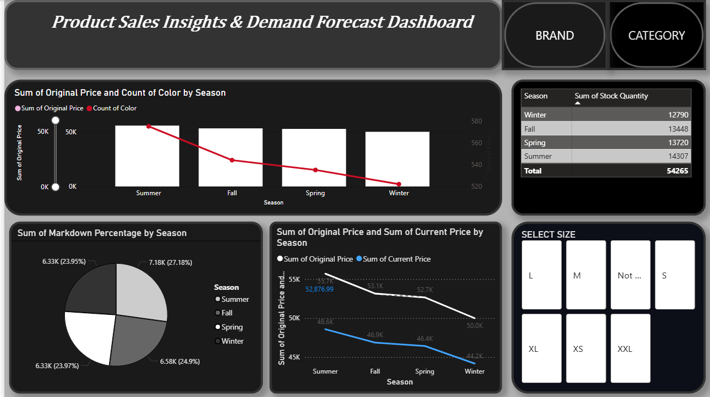

Ni-Assist
A Flask-based AI assistant for contextual conversations, document answers, and actionable task plans.
PythonFlaskGemini APISQLite
View project
Explore six projects across application development, infrastructure monitoring, analytics, and machine learning.
Showing 6 projects
A Flask-based AI assistant for contextual conversations, document answers, and actionable task plans.
Real-time infrastructure monitoring with CPU, memory, and disk metrics, interactive charts, and alerts.
Food-waste insights, visual dashboards, and AI-powered food-storage recommendations.
A clothing e-commerce application with customer accounts, product browsing, and an order workflow backed by MongoDB.
A PySpark notebook that classifies equipment observations and compares alert thresholds for inspection prioritization.
A Power BI dashboard for exploring retail pricing, seasonal stock, product ratings, returns, and demand trends.
A Flask-based AI assistant for contextual conversations, document answers, and actionable task plans.
The repository is available below. The previous EC2 deployment is currently stopped.
Real-time infrastructure monitoring with CPU, memory, and disk metrics, interactive charts, and alerts.
Food-waste insights, visual dashboards, and AI-powered food-storage recommendations.
A clothing e-commerce application with customer accounts, product browsing, and an order workflow backed by MongoDB.
A PySpark notebook that classifies equipment observations and compares alert thresholds for inspection prioritization.
The Decision Tree with an alert threshold of 0.10 ranked highest under the validation selection rule. At default thresholds, Logistic Regression and Linear SVM both had 0% failure recall and an F1 of 0. Lowering the tree’s threshold increased its validation failure recall from 30.61% to 71.43% and its F1 from 0.4225 to 0.4861, with more false alarms.
| Metric | Result |
|---|---|
| Accuracy | 94.98% |
| Failure precision | 29.89% |
| Failure recall | 68.42% |
| Failure F1-score | 0.4160 |
| Observations | 1,455 |
| Actual class | Predicted normal | Predicted failure |
|---|---|---|
| Normal | 1,356 | 61 |
| Failed | 12 | 26 |
The model detected 26 of 38 failures, missed 12, and generated 61 false alarms. On this synthetic dataset, the results illustrate how the model could prioritize inspections, with many alerts still requiring checks.
The notebook records successful model saving and loading, with matching predictions on both demonstration inputs.
A Power BI dashboard for exploring retail pricing, seasonal stock, product ratings, returns, and demand trends.

Designed during C++ Programming: DSA & OOP training at CSE Pathshala, June–August 2025. Includes role-based access control and CSV-based data persistence.